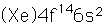

Ytterbium
| Symbol | Yb | Atomic number | 70 |  |
| Atomic mass |
| Thermal conductivity |
| |||||
| Atomic radius |
| Covalent radius |
| |||||
| Density |
| Atomic volume |
| |||||
| Melting point |
| Oxidation states |
| |||||
| Boiling point |
| Stable isotopes |
| |||||
| Heat of vapor. |
| Electronegativity |
| |||||
| Heat of fusion |
| First ionization |
| |||||
| Specific heat |
| Electrical conduct. |
|


| Electron configuration |  |
| General description | Nuclear data |
Periodic Table
Chemistry concepts
| HyperPhysics | R Nave |